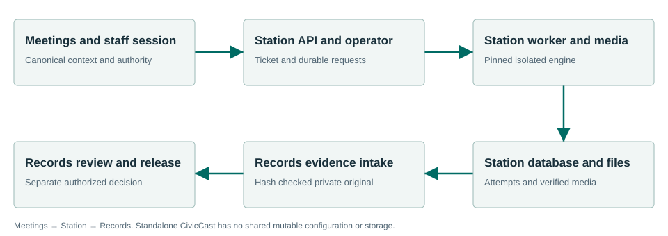

Capture the meeting and preserve its evidence.
Record council and board meetings, retain their agenda context, and deliver verified recording evidence to Records. Operators control capture, playout and approval. CivicCast remains an independent product.
What the workflow delivers
- Prepare meeting context. Create and save the actual meeting and agenda in Meetings. Assign each selected agenda item to that meeting. A recording request cannot substitute an editable meeting label for the canonical records.
- Open the operator. Sign in as authorized staff. Use the configured local operator command with the explicit native profile root. It obtains a short-lived one-use browser ticket; the native proof is not placed in the URL.
- Choose the input. Select the meeting, assigned agenda and administrator-configured live-source ID. For recorded-file work, place the source in the managed ingest directory and optionally supply an SRT sidecar. Callers cannot submit arbitrary pipelines or filesystem paths.
- Capture and stop. Start capture and distinguish waiting for a signal from active recording. Stop requests pipeline drain. Wait for completed status and validated output; a partial, failed or interrupted attempt is not a completed recording.
Connected evidence
Meetings → Station → Records is the accepted recording workflow. Townlight owns current session authority; Station owns its database, storage and media children. Standalone CivicCast remains separate, with no shared configuration, service, data directory or automatic updater fallback.
Know the beta boundary
There is no Station first-run wizard or automatic activation by the desktop composition. The accepted normal-profile path uses an explicitly configured paired Townlight HTTP process. Physical encoder/network, remote identity, SCM commissioning, CDN delivery and long-duration field quality are not certified. Station does not perform automatic meeting speech recognition.
Where the evidence goes

Meetings → Station → Records is the accepted recording workflow. Townlight owns current session authority; Station owns its database, storage and media children. Standalone CivicCast remains separate, with no shared configuration, service, data directory or automatic updater fallback.
Selected staff workflows passed.
The signed private candidate passed normal first-run and selected synthetic workflows in a fresh Windows Sandbox profile. This is not a claim that every screen, vendor, upgrade or city equipment configuration has been certified.
Read the exact acceptance and limits →Ready to evaluate?
Begin with the manual and the signed candidate linked above. Configure the chosen test site and have its staff review source applicability and run the existing workflows.
Live cable coverage and recorded video delivery
Station offers an encrypted live SRT feed to separate CivicCast while recording. The PEG operator controls cable broadcast. Completed recordings can be explicitly uploaded to YouTube with a reviewed title and chosen visibility. The private Records original stays intact.